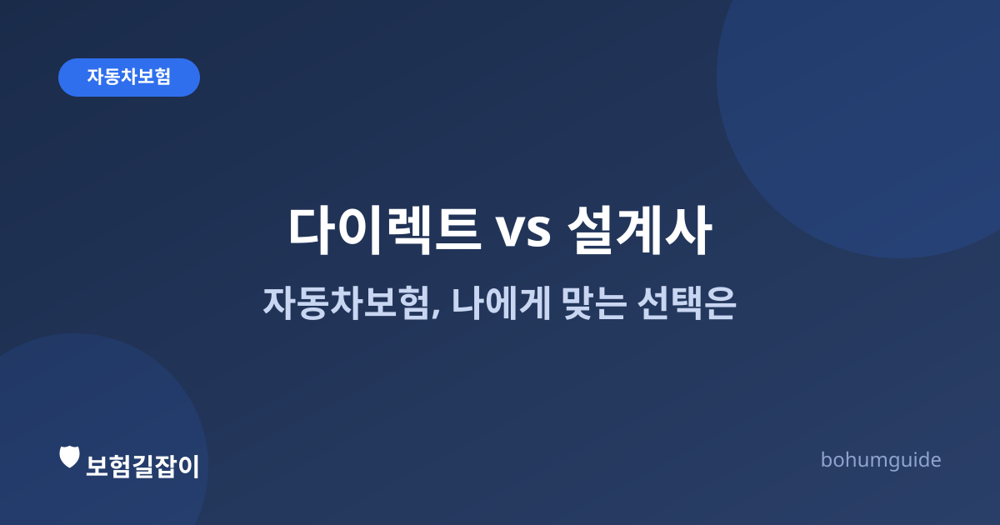

다이렉트 자동차보험 vs 설계사 가입, 나에게 맞는 선택은
자동차보험을 갱신할 때마다 "다이렉트로 갈아탈까, 원래 하던 설계사한테 계속 맡길까" 고민하게 됩니다. 두 방식의 실질적인 차이를 비교해서 판단 기준을 정리했습니다.

✍️ 편집자 참고: 본 글은 초안입니다. 보험사별 다이렉트 할인율과 설계사 채널 서비스 범위는 시점과 상품에 따라 달라질 수 있으므로 게시 전 최신 기준으로 검수·수정해 주세요.
자동차보험은 크게 다이렉트(온라인·전화) 채널과 설계사(대면) 채널을 통해 가입할 수 있습니다. 보장 내용 자체는 같은 상품이라면 채널과 무관하게 동일한 경우가 많지만, 보험료 구조와 상담·사고 처리 경험에서는 실질적인 차이가 있습니다. 두 방식의 장단점을 알아야 매년 갱신 시점마다 더 나은 선택을 할 수 있습니다.
가장 큰 차이: 사업비 구조와 보험료
다이렉트 채널이 대체로 더 저렴하게 느껴지는 이유는 설계사 수수료 등 모집 비용이 적게 들어가는 만큼 보험료에 반영되는 사업비가 낮기 때문입니다. 반대로 설계사를 통한 가입은 그 비용이 보험료에 포함되는 대신, 가입·갱신·사고 처리 과정에서 사람이 직접 안내해 주는 서비스를 받게 됩니다. 즉 '어느 쪽이 무조건 이득'이라기보다는, 보험료를 낮출지 상담 서비스를 받을지를 맞바꾸는 구조에 가깝습니다.
| 구분 | 보험료 | 가입·갱신 과정 | 사고 접수·상담 |
|---|---|---|---|
| 다이렉트(온라인) | 상대적으로 저렴한 경우가 많음 | 본인이 직접 담보·특약 선택 | 콜센터·앱 중심, 자기주도적 처리 |
| 설계사(대면) | 상대적으로 높을 수 있음 | 설계사가 담보 구성 상담·제안 | 담당 설계사에게 바로 문의 가능 |
표의 보험료 차이는 상품·연령·운전 경력 등 조건에 따라 달라질 수 있으므로, 실제 가입 전에는 여러 보험사 견적을 함께 비교해 보는 것이 좋습니다.
담보 구성, 스스로 판단할 자신이 있는가
다이렉트는 대인배상·대물배상·자기신체사고·자기차량손해(자차) 등 담보 항목을 직접 선택해야 합니다. 자동차보험 구조를 어느 정도 이해하고 있다면 필요 없는 특약을 빼고 필요한 담보만 골라 보험료를 아낄 수 있지만, 반대로 잘 모르고 담보를 줄였다가 정작 사고가 났을 때 보장을 못 받는 경우도 생길 수 있습니다. 담보 구조가 익숙하지 않다면 가입 전 자동차보험 기본 정보와 대인배상 I·II 차이, 자기차량손해(자차), 꼭 필요할까를 먼저 읽어 보는 것을 권합니다.
사고가 났을 때 체감 차이
평소에는 다이렉트가 편리하게 느껴지다가도, 막상 사고가 나면 체감이 달라질 수 있습니다. 설계사 채널은 사고 직후 담당 설계사에게 바로 연락해 상황을 설명하고 다음 절차를 안내받을 수 있다는 심리적 안정감이 있습니다. 다이렉트는 보험사 사고접수센터·앱을 통해 접수하는데, 최근에는 대부분의 보험사가 24시간 사고접수와 출동 서비스를 운영하고 있어 실무 처리 속도 자체에는 큰 차이가 없는 경우가 많습니다. 다만 처음 사고를 겪는 상황이라 무엇부터 해야 할지 막막하다면, 자동차 사고 났을 때 초기 대응을 미리 읽어 두면 어느 채널로 가입했든 도움이 됩니다.
과실 비율 다툼이 있을 때는 채널보다 손해사정이 중요
사고 과실 비율을 두고 상대방과 이견이 생기는 경우, 실제로 도움이 되는 것은 가입 채널보다 보험사의 손해사정 대응력과 근거 자료(블랙박스 등)입니다. 다이렉트든 설계사든 동일 보험사라면 사고 조사·과실 판단 절차는 같습니다. 관련 내용은 손해사정사는 언제 필요할까에서 더 자세히 다룹니다.
어떤 사람에게 어느 쪽이 맞을까
- 자동차보험 용어와 담보 구성을 어느 정도 이해하고, 매년 견적을 비교할 의향이 있다면 → 다이렉트가 보험료 절감에 유리할 수 있다.
- 차량·운전이 익숙하지 않거나, 가입·사고 처리 과정에서 사람의 안내를 받고 싶다면 → 설계사 채널이 심리적 부담을 줄여 줄 수 있다.
- 보험료 차이가 크지 않다면, 그동안 쌓아 온 설계사와의 신뢰·사고 이력 관리 편의성도 함께 고려해 본다.
- 어느 채널을 택하든, 갱신 시점마다 할인할증 등급 변화와 특약 구성을 다시 점검하는 습관이 보험료 절약의 핵심이다.
요약
다이렉트와 설계사 가입은 같은 상품이라도 사업비 구조 차이로 보험료 체감이 다르고, 담보를 직접 고르는지 상담을 받는지에서 경험이 갈립니다. 보험료를 아끼고 싶고 스스로 비교할 자신이 있다면 다이렉트, 안내받으며 진행하고 싶다면 설계사 채널이 맞습니다. 무엇을 택하든 매년 견적과 담보 구성을 다시 점검하는 것이 가장 중요합니다.
참고할 수 있는 공신력 있는 자료
- 금융감독원 — 자동차보험 관련 소비자 안내
- 금융소비자 정보포털 파인 — 보험료 비교·공시 정보
- 손해보험협회 — 자동차보험 제도 안내
본 정보는 일반적인 안내이며, 실제 보험료와 보장 조건은 보험사별 상품과 개인 조건에 따라 다르므로 여러 견적 비교와 약관 확인을 반드시 거치시기 바랍니다.